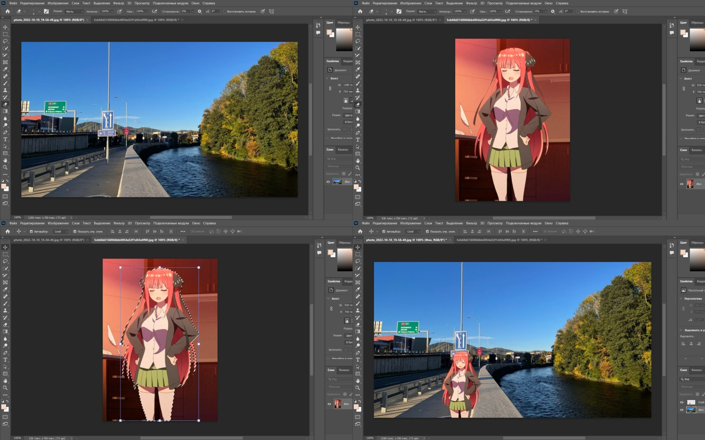
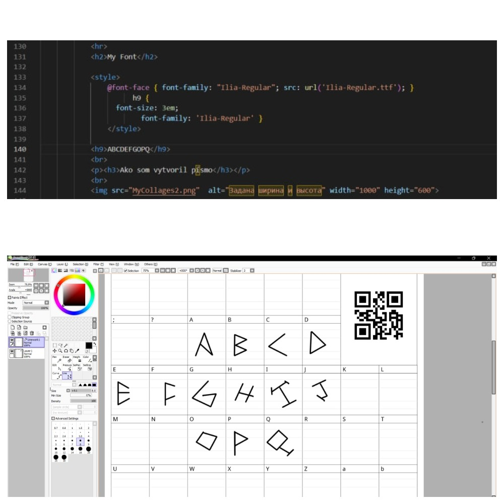

Jesenná láska
Miroslav Válek
Láska je strašne bohatá, láska, tá všetko sľúbi,
no ten, čo ľúbil, sklamal sa a ten, čo sklamal, ľúbi.
Prach dlhých, smutných letných dní na staré lístie padá,
poznala príliš neskoro, ako ho mala rada.
Tak každoročne v jeseni svetlá sa tratia z duše
a človek, koník túlavý, od srdca k srdcu kluše
a pre každé chce zomierať, žiť nechce pre nijaké,
chcel by mať jedno pre seba; je mu jedno aké.
Možno, že iba obrázok a možno tôňu iba.
No pred cieľom sa zastaví: Komu zas srdce chýba?
Zo všetkých mojich obrázkov mámivý ošiaľ stúpa;
bola to láska? Sklamanie? Aj láska bola hlúpa,
veď chcela všetko naraz mať a všetko naraz stráca.
Koľko raz v noci májovej hľadeli do mesiaca,
no máj im málo šťastia dal a krátke bolo leto.
Len jeseň, tá vie o všetkom, a jeseň nepovie to.
Šla zima dolu údolím a niesla odkaz máju:
túžieval, čakal, dočkal sa, odišla, nepozná ju.
Láska je strašne bohatá, láska, tá všetko sľúbi,
no ten, čo ľúbil, sklamal sa a ten, čo sklamal, ľúbi.
Prach dlhých, smutných letných dní na staré lístie padá,
poznala príliš neskoro, ako ho mala rada.

👻
PHOTOSHOP GENIUS


Ako urobil

Po vykonaní všetkých krokov na snímkach obrazovky vykonajte korekciu farieb pomocou kriviek a je to hotové.
Po vykonaní všetkých krokov na snímkach obrazovky vykonajte korekciu farieb pomocou kriviek a je to hotové.
My Font
Ako som vytvoril písmo
